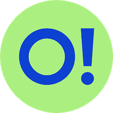
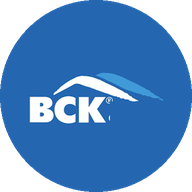
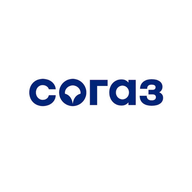
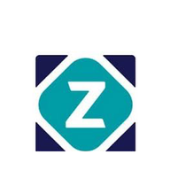
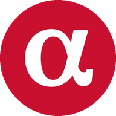

HR‑кабинет Лучей
Сервис, где HR компаний-клиентов прикрепляют сотрудников к ДМС и работают с документами. Разобралась, почему он стоил компании денег, и собрала план редизайна.
Кратко
30 секунд на чтениеПроблема
2,5 млн ₽ теряла компания на ошибках в кабинете
Жалоб от HR много, но никто не разбирался, каких и почему.
Исследование
12 интервью с HR и поддержкой
Плюс доска поддержки, разговоры с разработкой и разбор конкурентов. Нашла 16 проблем.
Результат
3 задачи сразу ушли в дизайн
Приоритизировала по деньгам, рискам и ручной работе и принесла на груминг. Редизайн в работе.
HR компаний‑клиентов каждый день работают в кабинете
Через кабинет они прикрепляют сотрудников к ДМС, загружают списки и подписывают документы. Если что‑то не получается — пишут аккаунт‑менеджеру.
Жалоб много, но никто не разбирался, каких и почему
потеряла компания на ошибках в возрастных коэффициентах — кабинет их не проверял.
Поговорила со всеми, кто сталкивается с кабинетом
HR из компаний‑клиентов

+4Аккаунт‑менеджеров и поддержки
проблем собрала в бэклог
Частые ошибки и их причины проверила с разработчиками.
Посчитала, с чем чаще всего приходят
Что есть у других страховых
| Массовая загрузка | Проверка данных | Отмена | |
|---|---|---|---|
 ВСК | ✓ | ✕ | ✕ |
 СОГАЗ | ✓ | ✓ | ✕ |
 Zetta | ✓ | ✕ | ✓ |
 Альфа | ✓ | ✓ | ✕ |
| ✓ | ✕ | ✕ |
Шесть проблем, которые стоят денег и ручной работы
Возраст не сверяется с тарифом
Компания недополучает страховую премию.
Изменения в запретный период
Каждый случай разбирают юристы.
Кнопка «Прикрепить» прячется
Крупные клиенты шлют Excel аккаунту.
«Номер занят»
Самый частый повод написать в поддержку.
Excel молчит об ошибках
Клиенты бросают загрузку после первой неудачи.
Нет отмены действия
Исправляет только поддержка.
Разложила проблемы по деньгам, рискам и частоте и принесла на груминг
3Рисуем сейчас
- Видимая кнопка «Прикрепить»
- Несколько продуктов в одной форме
- Понятные ошибки Excel
5В аналитику
- Запретный период, повторное прикрепление, логи Excel, отмена действий, перевод между юрлицами
3Откладываем
- Финансы по юрлицам, обратная связь, роли и доступы
Редизайн в работе: первые три задачи уже в макетах
 NDA · покажу на встрече
NDA · покажу на встрече